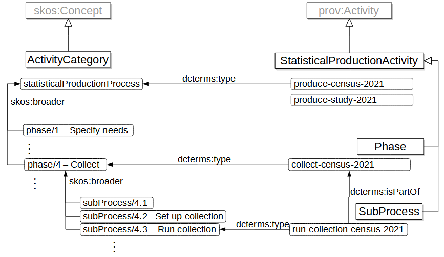
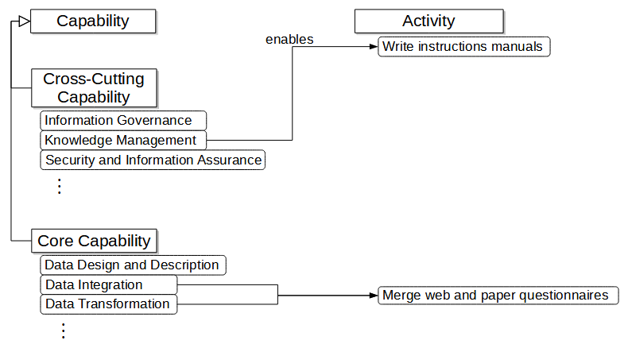
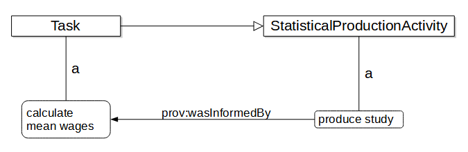

(Authors affiliations were recorded at the beginning of the writing of this document and might have changed since.)
Discuss adding “(COOS)” to the title
Subtitle is bit redundant
Abstract and ackowledgements are missing
Layout, copyright and SOTD section to adapt to the Unece context
The abstract will go there.
This is a draft document and may be updated, replaced or obsoleted by other documents at any time. It is inappropriate to cite this document as other than work in progress.
Introduction
Motivation
This paper introduces COOS, the Core Ontology for Official Statistics. COOS main purpose is to serve as an integration model for the core set of ModernStats standards backed by elements of well-known standard vocabularies. These ModernStats standards, mostly developed under the auspices of the UNECE High-Level Group for the Modernisation of Official Statistics, include the Generic Statistical Business Process Model (GSBPM), the Generic Activity Model for Statistical Organisations (GAMSO), the Generic Statistical Information Model (GSIM), and the Common Statistical Data Architecture (CSDA).
As more statistical offices are turning to semantic standards to formalize their data and metadata, it became necessary to establish common foundations on which the different standards can develop in a coherent way using a formal framework that allows interoperability, machine-actionability and globally unique identification.
ModernStats standards have been developed independently over the course of more than a decade by a diverse group of specialists with different viewpoints, stakeholders and ideas. This created misalignments and impedance mismatches between the underlying models that should otherwise work well together and complement each other: Information objects (GSIM) describe the data and metadata necessary to produce statistics where capabilities (CSDA) are the essential building blocks enabling activities (GAMSO) to be implemented via business processes (GSBPM).
COOS defines a conceptual integration framework to provide semantic coherence across these models based on a common vocabulary of terms, definitions and a well-defined set of inter- and intra-model relationships formalized in RDF/OWL using standards vocabularies, e.g. SKOS, PROV, DCAT, DC, ORG, etc. COOS provides a powerful mechanism to describe complex aspects of statistical production to support business discussions and technical solution implementations.
Model management is a big part of the standards integration story: the underlying models evolve and to maintain alignment the COOS needs to evolve with them. COOS includes an initial governance framework complementing each model’s own governance processes. This governance framework includes a core set of principles and a process for managing change.
Background
ModernStats standards consist of conceptual models and supporting documentation developed for the official statistics domain describing information entities and capabilities together with business processes and activities. The essence of this core set of standards is described below.
GSBPM provides a framework to describe the building blocks of statistical production in terms of sub-processes. Its main goal is to help statistical organizations standardize their statistical production processes. It was the first ModernStats model to be published, back in 2008, and has been widely used by national and international statistical agencies since then.
GAMSO provides a framework to describe the building blocks of statistical production in terms of activities. It complements the GSBPM in two ways: (i) by covering areas beyond the scope of GSBPM, and (ii) by providing a business capability view of statistical production itself.
GSIM complements both GSBPM and GAMSO by providing a catalogue of information objects to describe statistical data and metadata. It functions as a reference framework consisting of a set of standardised information objects to be used in statistical production.
CSDA provides a capability framework cataloguing the major abilities a statistical organization has to use, produce, share and manage data and metadata. CSDA integrates with the GSBPM and GAMSO by enabling processes and activities related to the lifecycle management of GSIM information objects.
Overview
The ontology provides classes and properties to allow statistical activities to be described, as well as the organizations that undertake them, the inputs they use and the ouputs they produce.
All activities undertaken by organizations that produce Official Statistics may be represented using the ontology. A distinction is made between activities directly linked to the production of statistical content, and activities required to perform those. Several classes of activities are also introduced to allow different levels of granularity to be expressed. The ontology also provides instances of GAMSO/GSBPM's activities and the possibility to map these to user defined activities. See Section 3. Activities.
In the context of the ontology, organizations are distinguished by whether they produce Official Statistics at national or international level. See Section 4. Organizations.
In the course of a statistical production process, different kinds of information objects flow from one activity to the other. The ontology focuses on the core information object “DataSet”. See Section 5. Products.
COOS Documents
In addition to the present specification, the COOS family of documents includes:
The formal vocabulary expressed with the Terse RDF Triple language (Turtle) [[turtle]] syntax.
The governance document which describes the principles and processes used for the evolution of COOS.
The URI policy which describes the principles used for the naming and identification of the COOS artifacts.
If there are any ambiguities or contradictions between the documents, the formal vocabulary will be authoritative.
COOS Namespace and Vocabulary
The COOS namespace URI is:
http://id.unece.org/def/coos#
The prefix coos will be associated to this namespace in this document.
The COOS vocabulary is a set of URIs, given in the left-hand column in Table 1 below. Note that we use upper camel case for naming classes and lower camel case for properties. The right-hand column indicates in which section of this document the corresponding term is explained in more detail.
COOS defines a number of individuals. The majority of these are instances of the classes above and are described in more detail in the relevant sections.
Other vocabularies used in this document or in the RDF specification are listed in Table 2 below, with their namespaces and associated prefixes.
Table 2. Other vocabularies used in this document
Prefix
URI
Description
cc
https://creativecommons.org/ns
Describing Copyright in RDF: Creative Commons Rights Expression Language ([[!CC-ABOUT]])
dc
http://purl.org/dc/elements/1.1/
Dublin Core Metadata Element Set, Version 1.1 ([[!DC11]])
PAV - Provenance, Authoring and Versioning ([[!PAV]])
prov
http://www.w3.org/ns/prov#
PROV-O: The PROV Ontology ([[!prov-o]])
skos
http://www.w3.org/2004/02/skos/core#
SKOS Simple Knowledge Organization System Reference ([[!skos-reference]])
vann
http://purl.org/vocab/vann/
VANN: A vocabulary for annotating vocabulary descriptions ([[!vann]])
voaf
http://purl.org/vocommons/voaf#
Vocabulary of a Friend (VOAF) ([[!voaf]])
RDF, RDFS, OWL and XSD vocabularies or namespaces are also used, with their usual URIs and prefixes.
The RDF examples are expressed in Turtle. Unless otherwise specified, these examples use the http://example.org/ns/ domain, which will be represented by the ex: prefix. Note however that individual resource names used as examples are entirely fictitious.
Activities
A large part of the COOS is related to the activities performed by statistical organizations. Indeed, the GSBPM model was one of the first to be standardized at the international level. It remains the most widely used of the UNECE models. The GAMSO appeared later, and was subsequently articulated with the GSBPM in a coherent scheme.
In this section, this timeline is followed by describing the COOS artefacts that originate from the GSBPM, then add the GAMSO view. Other useful COOS constructs related to Official Statistics activities are listed in a third sub-section (Section 3.3).
Base GSBPM model
The GSBPM comprises three levels:
Level 0, the statistical business process;
Level 1, the phases of the statistical business process;
Level 2, the sub-processes within each phase.
A first approach to OWL modelling of statistical activities based on the GSBPM is presented in [[GSBPM-LM]]. Basically, three classes are defined in this GSBPM ontology: StatisticalProductionActivity, Phase and SubProcess.
StatisticalProductionActivity is a sub-class of both prov:Activity and skos:Concept. Using PROV allows to specify who undertakes an activity and what entities it consumes or produces. Using SKOS allows to organize the activities in schemes, like GSBPM or GAMSO.
ex:produce-study a coos:StatisticalProductionActivity ;
rdfs:label "Produce study"@en .
Phase and SubProcess are both sub-classes of StatisticalProductionActivity and represent the concepts of a GSBPM phase and GSBPM sub-process.
The ontology defines an individual for each GSBPM phase and sub-process, as well as two specific individuals: the GSBPM itself, which is viewed as as a skos:ConceptScheme (the scheme of all the GSBPM phases and sub-processes), and statisticalProductionProcess, which is an instance of StatisticalProductionActivity that represents the statistical production process as a whole.
The links between the different individuals are represented by the usual SKOS properties: all the sub-processes of a phase have a skos:broader link to the phase, and each phase has a skos:broader link to the statisticalProductionProcess individual. Additionally, the idea that each phase is made up of its different sub-processes can be represented by using the Dublin Core dcterms:hasPart and dcterms:isPartOf properties.
[[[#image-gsbpm]]] summarizes the vocabulary terms defined so far in this document.

Overview of COOS vocabulary for GSBPM
Adding GAMSO
Introducing GAMSO in this framework is not very difficult. The terminology used in the model shows that the main concepts are activities and activity areas. GAMSO describes two kinds of activities: those that are of statistical nature, for example “Manage Statistical Methodology”, and those that are in support of statistical activities, like “Manage Finances”. To account for this distinction, COOS defines two different classes: StatisticalActivity and Activity. Activity is a daughter of prov:Activity and a mother of StatisticalActivity, which in turn is a mother of the StatisticalProductionActivity introduced previously.
The GAMSO activity areas are not really activities by themselves, but rather “boxes” used to classify the activities. This makes them instances of skos:Concept to represent this “taxonomic” nature, or more precisely of a specific ActivityArea class, which is a sub-class of skos:Concept.
<http://id.unece.org/activities/activityArea/1> a coos:ActivityArea ;
skos:notation "1" ;
skos:prefLabel "Strategy and Leadership"@en .
<http://id.unece.org/activities/activity/2.3> a coos:Activity ;
skos:notation "2.3" ;
skos:prefLabel "Monitor Capability Improvements"@en .
In addition, COOS defines the OverarchingActivity class, which represents a supporting activity that applies to all production phases, e.g. metadata management, data management, statistical methodology management, etc. These activities correspond to the overarching processes in the GSBPM and the statistical activities in Corporate Support in GAMSO. These activities support the execution of phases and sub-processes effectively. When harmonized and standardized, overarching activities enable the efficient execution of the entire statistical production process.
As with GSBPM, COOS defines individuals for each GAMSO activity and activity area, and the model itself is a skos:ConceptScheme with all four activity areas having skos:broader links to it and skos:narrower links to the activities they contain. At the top of the scheme, an instance of Activity represents the whole activity of statistical organizations and is named officialStatistics.
Finally, two properties are needed to describe how a GAMSO Activity relates to a GSBPM StatisticalProductionActivity:
supports: an Activity, for example a GAMSO individual, helps to perform a StatisticalProductionActivity, e.g. a sub-process;
uses: conversely, a statistical production activity will require one or several GAMSO activities in order to function.
Properties uses and supports are inverses of each other. They represent weaker (looser) forms of dependencies than partitive relationships: uses/supports are about function whereas partitive relations are about constitution. An obvious example of uses/supports relation is included in the ontology for reference:
[[[#image-gamso]]] gives an overview of the COOS elements defined so far in this document.
Overview of COOS vocabulary for GAMSO and GSBPM
Note:
In COOS, the relation between the “Production” ActivityArea of GAMSO and the GSBPM as a concept scheme is expressed by a simple pair of rdfs:seeAlso properties. No GAMSO Activity is defined in the “Production” area, that would be redundant with the “Statistical Production Process” individual, but a skos:exactMatch relation is made between the GAMSO activity area and the GSBPM individual. It is possible that GAMSO and GSBPM evolve in the future towards a totally integrated view. In such an approach, all GSBPM and GAMSO artefacts would go into a single skos:ConceptScheme and the GSBPM would not be a concept scheme anymore but rather a skos:Collection.
Adding GSIM and CSDA
Adding the Generic Statistical Information Model (GSIM) in this framework allows us to refine StatisticalActivity even further. In parallel to StatisticalProductionActivity, two additional sub-classes of StatisticalActivity can be defined:
StatisticalProgram: it is essentially a set of activities carried out to produce statistics. These statistics are about the set of units in scope for the program, e.g. “All persons with a university degree”, within a given subject field, e.g. income statistics, tourism, etc.
StatisticalProgramCycle: statistical program activities are often repeated over time in iterations called cycles. A StatisticalProgramCycle is one of those iterations for a specific time and geography.
Another dimension to consider is information capabilities. A capability is an ability a statistical organization possesses to undertake a specific activity. It is achieved through the integration of all relevant capability elements (e.g. methods, processes, standards and frameworks, IT systems and people skills). The notion of capability is often used in enterprise architecture approaches like TOGAF (The Open Group Architecture Framework) or, in the statistical domain, the Common Statistical Data Architecture [[CSDA]]. Capabilities can be mapped to strategic goals and objectives and provide a useful starting point to map lower level elements such as business process and functions, applications and technology assets.
Following CSDA, two types of capabilities are distinguished:
Core capabilities: capabilities the organization needs to execute its core business, i.e. the production of statistics. They generally map to phases in GSBPM.
Cross-cutting capabilities: capabilities used to formulate and implement the policies that the organization chooses for its internal operations. They generally map to corporate support in GAMSO and overarching processes in GSBPM.
Examples of capabilities relevant to statistical activities can be found in CSDA, but also in other references like the Global Statistical Geospatial Framework (GSGF):
ex:csda-data-integration a coos:CoreCapability ;
rdfs:label "Data integration"@en ;
skos:definition "The ability to combine, link, relate and/or align different data sets in order to create an integrated information set."@en .
ex:geostat-integration-services a coos:Capability ;
rdfs:label "Develop and apply services for smarter statistical-geospatial integration"@en ;
rdfs:isDefinedBy <https://www.efgs.info/geostat/> .
Also, the European Statistical System has published a Business Capabilities Model that defines a number of capabilities organized in three levels.
To represent the link between a capability and the activities it allows to perform, COOS defines the enables property. [[[#image-csda-ex]]] below shows an example using this property.

Linking COOS capabilities and activities
Note:
There is an obvious relation between capabilities and the “Capability Development” GAMSO activity area, but this link is not formally modeled in COOS.
More detailed activities
The previous definitions stay in the framework of the GAMSO/GSBPM/GSIM/CSDA, but more precise notions will be needed by the statistical organizations for the more detailed modelling of their statistical activities. COOS users can adopt different names for these more specific activities that are scoped by a given GSBPM sub-process or overarching activity, but COOS defines the generic Task class as a common term for better interoperability. Tasks can be more or less granular and form hierarchies.
ex:calculate-mean-wages a coos:Task ;
rdfs:label "Calculate mean wages"@en ;
skos:broader <http://id.unece.org/activities/subProcess/5.7> .
ex:produce-study prov:wasInformedBy ex:calculate-mean-wages .
[[[#image-ex1]]] shows how PROV can be used to represent links between activities: here it is supposed that the “Produce study” activity uses the results of the “Calculate mean wages” task.

Using PROV with COOS constructs
As mentioned previously, the Task class can be used by statistical organizations to create instances for their own needs. Two statistical organizations can create their own "Calculate mean wages" task, and only their labels would indicate that they do similar things. In certain cases however, it could be useful to define standard sub-classes of Task for some widely used and specific types of tasks, for example record linkage or hot-deck imputation. This would allow for example to refer to relevant methodology.
Organizations
So far, this document has discussed how the ontology represents what the official statistics community does in the form of activities, capabilities and processes. This section describes the ontology part that captures how this community is organized.
Essentially, what is needed is the notion of a collection of people organized as a group in some formal structure, which is represented using org:Organization and prov:Organization. Then a StatisticalOrganization is defined as an organization, or unit within an organization, whose primary role is the production of official statistics. This StatisticalOrganization class is further specialized into two sub-classes:
NationalStatisticalInstitute: The main producer of official statistics in a country and/or the organization responsible for coordinating all activities related to the development, production, and dissemination of official statistics in the national statistical system. The actual name given to the national statistical office in a country may be National Statistical Institute (NSI), National Bureau of Statistics (NBS), Central Bureau of Statistics (CBS), National Statistical Agency (NSA), Central Statistical Agency (CSA), Central Statistics Agency (CSA), etc.
InternationalAgency: A body with an international membership, scope, or presence whose primary role is the production of official statistics.
Organizations vocabulary overview
The use of org:Organization as a mother class allows to benefit from all the constructs of the ORG ontology, for example the org:hasUnit/org:unitOf properties for the representation of the hierarchical links between organizations. The use of prov:Organization allows to capture the relations between organizations, activities and products, for example prov:wasAssociatedWith can link a statistical activity to the statistical organization that conducts it.
It would also be useful to include in the base ontology instances of StatisticalOrganization representing the existing national statistical institutes and international statistical organizations. This would provide in particular a shared global identifier for each of these organisms.
Products
Finally, the information that activities, capabilities and processes use and produce needs to be described. This is captured by an InformationObject class that aligns with the notion of “information object” in GSIM, i.e. all GSIM classes are going to be sub-classes of InformationObject. A StatisticalInformationObject is essentially an InformationObject representing statistical information, i.e. they are the inputs and outputs in the design and production of statistics. Some of those statistical information objects are also entities in the Prov sense, which are captured by the StatisticalProduct and StatisticalDataset classes, corresponding to the GSIM Product and GSIM Data Set, respectively.
Here again, the PROV vocabulary is useful, in particular to provide provenance information on products and to link them to activities and organizations (for example prov:wasGeneratedBy from a product to an activity).
The StatisticalDataset class is also declared as a daughter of dcat:Dataset, which allows the reuse of DCAT (or StatDCAT-AP), in particular to document datasets and their different distributions, group them in catalogues, etc.
Products vocabulary main classes
In DDI-CDI ([[DDI-CDI]]), four basic structural types of organizing data sets have been defined: rectangular, event history, key-value pair, and dimensional. Here the 'graph' type is added, which also covers tree-like data, and rename 'event history' as 'transposed'. Several of the types could be used to structure the same data. There is no canonical structure in all cases, though some data is much more amenable to one structure over the others.
The types are defined roughly as follows:
rectangular (or wide) - rows are units and columns are variables
transposed (or event history, tall or long) - rows are based on the value for each variable, one unit at a time
dimensional - a pre-defined set of cells defined by the combination of categories, one from each of a set of dimensions (category sets), used to handle the value of some measure (variable) restricted to the cell
key-value - a set of values, each associated with some key
graph - datapoints are nodes and relationships between them are edges in a graph structure
Dimensional data are usually associated with aggregates. Key-value data are often taken from scraping the web. Event-history (transposed) is used to describe events over some time period.
The nominal, ordinal, interval, ratio are not used to differentiate datasets. Rather, they are families of datatypes used to describe variables. Nominal data are those conforming to a finite set of categories with no other conditions (sex categories). Ordinal data are those conforming to an ordered finite set of categories, but the difference between adjacent categories is not necessarily uniform (Likert scale measures of satisfaction). Interval data are numeric with no zero (absence of quantity) defined (Celsius temperature). Ratio data are numeric with a defined zero (Kelvin temperature). These apply to any kind of statistical data.
The distinction between aggregate and unit data is based on the definition of the variables in the dataset. A dataset can contain both unit and aggregate data.
Access restrictions on data (e.g., public, restricted, private) are assigned by the business and can change over the life-cycle of the dataset.
The domain for a dataset is defined by the subject field that data apply to. However, some datasets are merged from others, so a merged set can have the combination of its constituents. There seems to be no restriction on the number of subject fields.
Mode of transmission is not definitional for a dataset, as a single dataset can be obtained multiple ways. The phases of GSBPM may not be useful, as a single dataset can pass through a phase without change. Further, the phases impose a usage criterion (data for collection; data for editing; etc.) that seems arbitrary and would be useless in another domain (outside statistics).
Similarly, the explorative, temporary, and organizational categorization is based on intent, rather than the data per se. Plus, the categorization could change without any change to the data. If the organizational structure described above (rectangular, etc.) is changed, then it should be called a new dataset.
Dataset types
No specific type of data set is defined for metadata, since sets of metadata can have any of the structures defined. However, COOS specifies the metadataFor property that can be used to associate a set of metadata to the dataset (or other resource) that it qualifies. For example, the [[SDMX]] standard defines the notion of a MetadataSet which conforms to a MetadataStructureDefinition and can be attached to differents types of targets. Note that the notion of metadata is contextual: a table of exchange rates can be viewed as a data set in the framework of a financial study but as metadata for a set of international consumer prizes. The range of the metadataFor property is intentionally left open in order to allow for cases where matadata sets are attached to studies or other kind of products.
To further qualify statistical products, COOS defines two properties: content and presentation, that take their values in controlled vocabularies (represented as SKOS concept schemes). More specifically, COOS defines the following values for these properties:
content can be “Data”, “Metadata”, “Analysis” or “Model”
presentation can be “Dataset”, “Publication”, “Viualization”, “Infographic”, “Thematic Map” or “Interactive”
Implementors can define additional instances of the coos:ProductContent of coos:ProductPresentation for their specific needs.
Conclusion
This paper introduced COOS, an ontology that serves as an integration model for the core set of ModernStats standards. During the development of COOS, it became evident that the natural misalignments and inconsistencies found among models developed independently are often diminished, and occasionally eliminated altogether, by the presence of a solid integration framework.
Future work includes investigating the feasibility and benefits of integrating other aspects of standards already included, e.g. objects of the GSIM Concept Group, and look into new standards and architectures, e.g. the Common Statistical Production Architecture (CSPA), the ESS Enterprise Architecture Reference Framework, and the European Interoperability Framework (EIF) and Reference Architecture (EIRA), and the Single Integrated Metadata Structure (SIMS), among others.
Share - copy and redistribute the material in any medium or format
Adapt - remix, transform, and build upon the material for any purpose, even commercially.
The licensor cannot revoke these freedoms as long as you follow the license terms.
Under the following terms:
Attribution. You must give appropriate credit, provide a link to the license, and indicate if changes were made. You may do so in any reasonable manner, but not in any way that suggests the licensor endorses you or your use.
No additional restrictions. You may not apply legal terms or technological measures that legally restrict others from doing anything the license permits.
Disclaimer
This deed highlights only some of the key features and terms of the actual license. It is not a license and has no legal value. You should carefully review all of the terms and conditions of the actual license before using the licensed material.
Creative Commons is not a law firm and does not provide legal services. Distributing, displaying, or linking to this deed or the license that it summarizes does not create a lawyer-client or any other relationship.